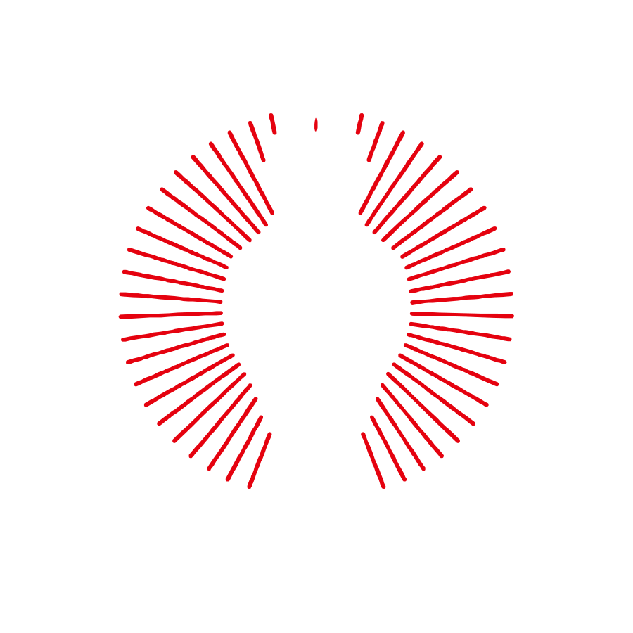
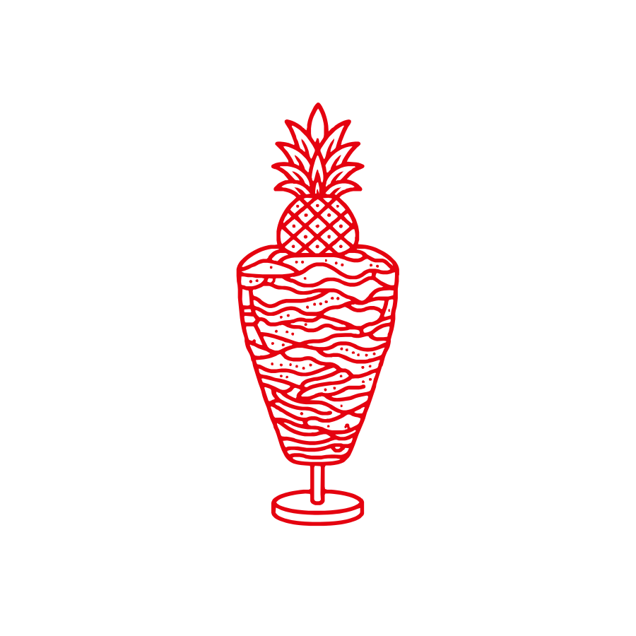
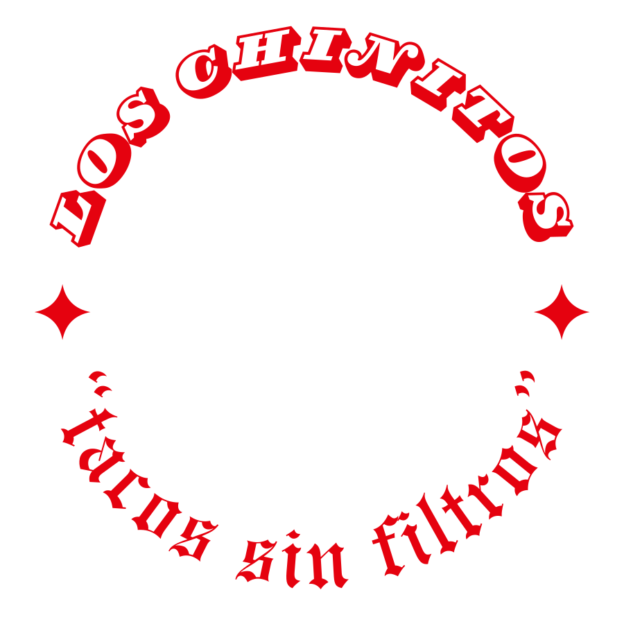

Es fing nicht mit einem Businessplan an
Angefangen hat alles in Ciudad de México, an einem Montagmittag im Mercado de La Merced, mit je drei Tacos al Pastor. Schon der erste Biss hat uns so überzeugt, dass wir das unbedingt mit euch teilen wollten.

TONI
LINH
MATO
In dieser Stadt nannten sie uns CHINITOS
In Mexiko nennt man Menschen mit ostasiatischen Gesichtszügen oft scherzhaft „Chinitos“. Das ist nicht böse gemeint, sondern eine Neckerei, quasi ein Zeichen der Zugehörigkeit. Aus „Chinito“ wurde „carnal“ und aus „carnal“ wurde „hermano“.
Auf unseren Reisen durch Mexiko haben wir nicht nur mega viel über Tacos gelernt. Wir wurden auch überall herzlich empfangen, und das hat uns bis heute geprägt. Genau diese Herzlichkeit möchten wir mit unseren Tacos an euch weitergeben.